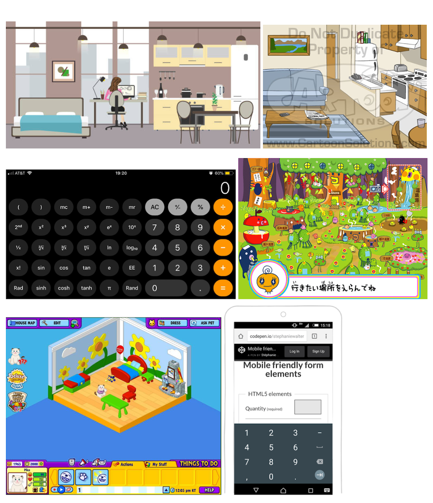

Project Proposal
For the final project of my undergraduate Human Computer Interaction class,
a partner and I had to develop an application of our choice. After some
brainstorming, we decided we wanted to create an app that helps young adults
take better care of themselves, beyond just offering reminders to eat,
sleep, and drink water. We proposed a more engaging and motivational
experience by having users take care of an avatar, that acted as an extension
of the user, to remind them to also care for themselves. Our process is detailed
below, but
the final prototype can be found here on Github.
Conceptual Design
After submitting our projet proposal, we began by creating Metaphors and
Scenarios for the User and for Sleeping, Eating, and Drinking Water. We
also found and had a meeting to discuss visual inspiration.


Sketches and Storyboarding
After creating a Primary Persona, we developed our Scenarios and explored
potential ideas by each sketching a proposed layout for our most important
screen i.e. where the user gives the avatar food, water, and tells it to sleep.


We then worked together to combine our ideas into one to create screens for
The Studio Apartment, showing a confirmation pop-up, and displaying a generic
dialogue box. We also developed a rough storyboard showcasing how our app
could successfully remind someone to care for the avatar and themselves.

Paper Prototyping and Wizard of Oz Testing
With a clearer idea of our screens, we then created paper prototypes and
split up to perform tests with potential users.

Before performing these tests, we created tasks to cover different functionalities:
1. Move through the welcome form screens, enter values for how much sleep you want to get and how much food and water you want to eat and drink.
2. Give your avatar water.
3. Change the number of hours of sleep you want to get to 9 hours.
4. Feed your avatar.
We then each took notes during testing and reconvened to, together, establish the following key takeaways:
1. Move through the welcome form screens, enter values for how much sleep you want to get and how much food and water you want to eat and drink.
2. Give your avatar water.
3. Change the number of hours of sleep you want to get to 9 hours.
4. Feed your avatar.
We then each took notes during testing and reconvened to, together, establish the following key takeaways:

High Fidelity and Clickable Prototype
Using the feedback from our initial testing, we created a high-fi prototype.
As required by the course, we had to make these prototypes accessible via
a web browser, which is why we coded them using JavaScript, HTML, and CSS.
Heuristic Evaluations and User Testing
In order to iteratively improve our product, we performed more user tests as
well as heuristic evaluations (the "experts" were our peers from the course).
From these tests and evaluations, we prioritized our results and made changes
to our high-fi prototype.


Final Product
After iteratively improving our application, we ended with
our final prototype which can be explored in your browser
or can be viewed below via the demo video we created.